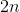
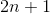
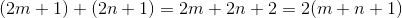
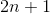
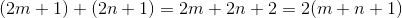
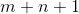
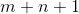

Explanation:
There are a few main approaches to this problem, some better than others.
I will first go over the most straightforward and intuitive solution, and
then the approach that runs quicker (only about 33%) but is a bit harder to come up with.
The easiest way to think about this problem is quite literally. The problem
asks us the find the sum of all even-valued Fibonacci terms. So, if we loop
through the Fibonacci sequence and check which ones are even, we should be
good. That is exactly what solution 1 does, and the code is below.
On the other hand, maybe you may have thought of only checking the even terms.
To do this, we might want to inspect the Fibonacci sequence a bit closer.
You may have noticed a pattern, but looking at the sequence, you might suspect
that every third term is even. And you would be right! It is easily proven too.
An even number can be written as ,
where  is an integer;
whereas odd numbers can be written as .
Let's see what happens when you add two odd numbers together: 
where
is an integer;
whereas odd numbers can be written as .
Let's see what happens when you add two odd numbers together: 
where  and are integers.
In that case,  must also be an integer.
This shows that the sum of two odd numbers is an even number. The same logic can be
used to show that the sum of two evens is an even and the sum of an even number with
an odd number is an odd number. Now we have all the tools we need. Our first two terms
are odd and even, respectively. We will call this state A—when our last two terms are odd
and even. Next, we add them to get an odd number, and we'll call this state B: (Even, Odd).
When we add them, we get to state C: (Odd, Odd). And lastly, adding those will return us
back to state A: (Odd, Even). This proves that the parity
of Fibonacci numbers is cyclic, with evens being every third term.
and are integers.
In that case,  must also be an integer.
This shows that the sum of two odd numbers is an even number. The same logic can be
used to show that the sum of two evens is an even and the sum of an even number with
an odd number is an odd number. Now we have all the tools we need. Our first two terms
are odd and even, respectively. We will call this state A—when our last two terms are odd
and even. Next, we add them to get an odd number, and we'll call this state B: (Even, Odd).
When we add them, we get to state C: (Odd, Odd). And lastly, adding those will return us
back to state A: (Odd, Even). This proves that the parity
of Fibonacci numbers is cyclic, with evens being every third term.
Now we must find a recurrence relation
between these odd numbers. It is shown here:
Of course, since the evens are at every third term, this works perfectly and can be verified just by looking at the sequence. Now, we can just implement this in the code. Instead of checking if the numbers are even, just change how we generate the fibonacci numbers to only give us the even ones.